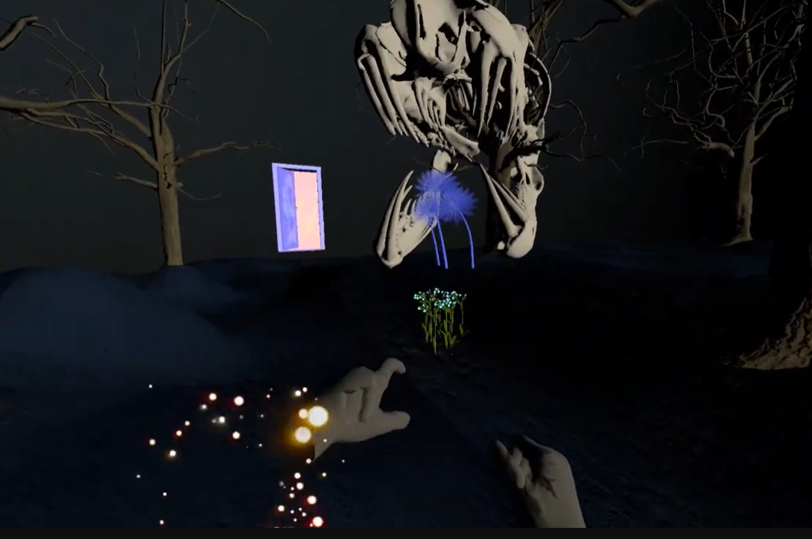
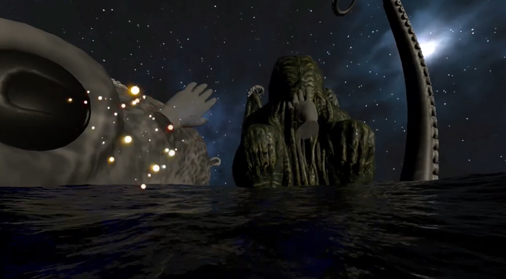
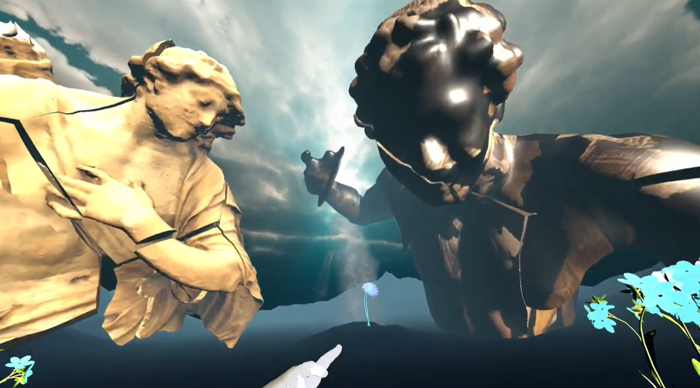

← Back to Index
Abyss - Physics Based VR Narrative Horror Experience
This physics-based VR narrative horror prototype explores vulnerability and human insignificance within a Lovecraftian cosmic setting. Gesture-driven locomotion and interaction meaningfully integrate the player’s body into the gameplay, while physics systems reinforce instability and tension. VR’s spatial immersion and 3D audio amplify scale perception and fear of the unknown, transforming horror into an embodied experience.
Key Features
- Physics-based interaction emphasising instability and loss of control
- Gesture-driven locomotion using hand and finger tracking
- Exaggerated spatial scale and 3D audio to evoke megalophobia
- Environmental storytelling within an immersive VR space
Design Focus
- Transforming horror from observed to embodied
- Exploring cosmic insignificance and fragile human agency


